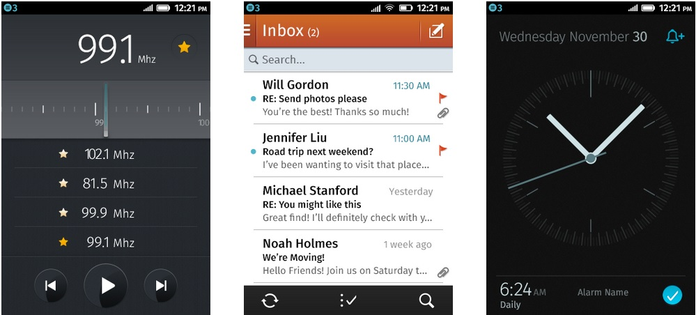

Rormix 平台可發掘目前正夯的音樂影片。這些影片都已依照各音樂類型或類似風格的暢銷歌手而分類，讓消費者能更輕鬆發現新的音樂影片。
而「Rormix」應用程式即以 PhoneGap 所開發，目前已提供 iOS 與 Android 版本。從寫下第一行程式碼直到讓 App 在商城上架，整個開發過程大概花了一個月。結果移植到 Firefox OS 只要一天！

接著來說說我們學到的幾個秘訣：
到底該針對哪個螢幕尺寸來開發？
在開發 Open Web 的應用程式之後，即可安裝到實際的桌面版和行動版 Firefox 瀏覽器，亦可安裝於 Firefox OS 裝置之上。
如果單一 App 就要支援上述的所有 Firefox 系統，就必須採用「適應性設計 (Responsive design)」模式；開發者當然也可以限定想要支援的平台。目前的 Firefox OS 智慧型手機具備 320×480 解析度，另可達「1」像素密度 (Pixel density)；所以不需另外產生特殊尺寸的圖片。
「上一頁 (Back)」按鈕呢？
iOS 裝置並沒有「上一頁」按鈕；Android 裝置則提供硬體的「上一頁」按鈕。那 Firefox OS 又該怎麼做？Firefox OS 具備軟體的「上一頁」按鈕。開發者在建構 App 的 manifest 檔案 (你會在「應用程式管理員 (App Manager)」看到中文翻譯為「安裝資訊檔」) 時，就能選擇是否隱藏按鈕。按鈕可藏在畫面底部，但使用上可能有點難度。
我建議開發者仍可為自己的 App 設計按鈕，並預設隱藏起來，讓消費者能輕鬆使用 App。
//jQuery example
$('.backbutton').click(function(){
history.go(-1);
});
1234
//jQuery example$('.backbutton').click(function(){ history.go(-1);});
##
「Stateful」的設計
由於 Firefox OS 仍有「上一頁」按鈕，因此開發者所設計的 App 必須能儲存畫面狀態 (stateful)，讓使用者在點擊「上一頁」按鈕時，可回到先前儲存的畫面狀態。
現有許多 JS 框架均透過段落識別碼 (Fragment identifier) 而載入不同的畫面狀態 (如 Sammy JS)。只要使用這類框架就能輕鬆建構此功能。
//jQuery example
//Sammy app
var app;
$(function(){
app = Sammy(function() {
this.get('#/', function() {
//Load default content
});
this.get('#/trending', function() {
//Get trending content
});
this.get('#/fresh', function() {
//Get fresh content
});
});
});
//Load the default content on app load
app.run('#/');
//Go to fresh content
$('.freshbutton').click(function(){
app.setLocation('#/fresh');
});
123456789101112131415161718192021222324252627
//jQuery example //Sammy appvar app; $(function(){ app = Sammy(function() { this.get('#/', function() { //Load default content }); this.get('#/trending', function() { //Get trending content }); this.get('#/fresh', function() { //Get fresh content }); });}); //Load the default content on app loadapp.run('#/'); //Go to fresh content$('.freshbutton').click(function(){ app.setLocation('#/fresh');});
建立選單
使用 CSS3 Transforms 不僅能快速為 Firefox OS 設計選單，而且也能儘量簡化選單，讓顯示選單時的重繪 (Redraw) 作業不致佔用過多資源。截至本文發表為止，Firefox OS 手機參考像素的寬度均與所有 iPhone 相同；而高度則與 iPhone 5 之前的型號相同。所以你的設計只要能用於 iOS 之上，就應該沒有問題。
加入 Firefox OS 的風格
其實已經有一系列的設計指南，可供開發者了解 Firefox OS 平台的色彩搭配等規則。另外也說明如 App 的圖示與字型等細節。

提交 App
在完成自己的 App 作品之後，可選擇 App 提交管道。開發者可將 App 封裝成 zip 壓縮檔：
zip -r package.zip *
接著把 zip 檔提交到 Marketplace，或自行架設/托管該 App。
其實也可以簡單將程式碼架設/托管為網頁 (而不用壓縮)。透過額外的小型 JS 即可提示消費者將 App下載到自己的手機上。
同場加映：使用 PhoneGap / Cordova 搭配 HTML5
只要開發 Web App，也就能迅速且輕鬆的建構跨平台 App。好處還不只如此。只要透過適應性設計 (Responsive design) 的特性，甚至只要單一專案即可適用不同的尺寸或平台。而進階工具與工作流程 (如 Sass 與 Yeoman 為例) 都能更輕鬆開發 App。
PhoneGap / Cordova 3.4 版起開始支援 Firefox OS。可參閱《Building Cordova apps for Firefox OS》進一步了解。使用 PhoneGap 的最大優點在於，開發者只需支援單一的 Codebase 即可用於自己的全部 App。我們都知道瀏覽器之間均有些微的差異，而 PhoneGap 亦內建了整合 (Merge) 機制，可讓開發者從主程式碼中區隔出各平台專屬的程式碼，並在建構 App 時再次整合即可。
PhoneGap 另具備函式庫，可存取手機的原生屬性 (例如原生的對話框)。此程式碼亦可跨平台所用，以儘量避免重複的程式碼。
PhoneGap 最讚的地方，就是能讓開發者建立自己的外掛程式、以簡單的方式發揮行動裝置的功能，並能輕鬆轉換 JS 與原生碼。
原文連結：Rormix – Discover Emerging Music Videos with Firefox OS